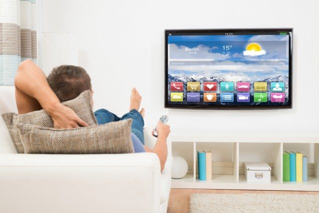

ટેલિવિઝન અથવા ટીવી એ બાળકો અને પુખ્ત વયના લોકો માટે માત્ર મનોરંજન જ નથી, પરંતુ શૈક્ષણિક કાર્યક્રમો, સમાચાર, રમતગમતની કોમેન્ટરી, પ્રવાસ વગેરે જેવી ઉપયોગી માહિતીનો એક મહત્વપૂર્ણ સ્ત્રોત પણ છે. કેટલીકવાર, આપણે ટીવી જોવા માટે કલાકો વિતાવીએ છીએ. આ લેખમાં, હું તમને ટીવી જોવા વિશે અને તમારા ઘરમાં ટીવીની આદર્શ પ્લેસમેન્ટ વિશે માર્ગદર્શન આપીશ.
રૂમમાં ટીવીની આદર્શ સ્થિતિ મહત્વપૂર્ણ છે. જો તમે તે પરિબળોનું ધ્યાન રાખશો નહીં, તો તમને નીચેના જેવા કેટલાક નકારાત્મક પરિણામો મળી શકે છે.
તે સાચું નથી કે ટીવી વધુ જોવાથી તમે અંધ બની શકો છો. પરંતુ તે તમારી આંખના સ્વાસ્થ્યને અસર કરે છે.
The correct distance will be at which you will be comfortable seeing the image on the TV. Many adhere to the figure - 3 meters or 10 feet.
આદર્શરીતે, અમે સૂચન કરીએ છીએ કે સૂત્રનો ઉપયોગ કરીને આરામદાયક અંતરની ગણતરી કરી શકાય છે:
"ટીવી કર્ણ" x 3 થી 4
ઉદાહરણ તરીકે, ટીવી કર્ણ 80 સે.મી. છે, તેને 4 વડે ગુણાકાર કરો, આપણને 3.5 મીટરનું અંતર મળે છે. આ અંતરે છે કે આંખો ટીવી જોવાથી પીડાશે નહીં. તેને પણ અજમાવી જુઓ, તમારા આરામદાયક અંતરની ગણતરી કરો.
ફ્લોર ઉપર ટીવીની ઊંચાઈ પણ એટલી જ મહત્વની છે. આરામદાયક જોવા માટે, તમારા માથાને પાછળ ટેકો દઈને રાખવાની અથવા તેને નમાવવાની ભલામણ કરવામાં આવતી નથી. જ્યારે તમે બેઠા હોવ ત્યારે ટીવી સ્ક્રીન આંખના સ્તર પર હોવી જોઈએ. આ ફ્લોરથી આશરે 1 - 1.5 મીટર અથવા 3-4 ફૂટ છે.
લાંબા સમય સુધી ટીવી જોવાથી આંખને થાક લાગે છે. આંખોમાં ભારેપણું અને દુખાવો, માથાનો દુખાવો, ચક્કર, બળતરા દેખાઈ શકે છે. લાંબા સમય સુધી જોવાથી અનિદ્રા પણ થઈ શકે છે. આવા નકારાત્મક પરિણામોને ટાળવા માટે, જોવાનો સમયગાળો 2-3 કલાકથી વધુ ન હોવો જોઈએ: મૂવી અથવા કોઈ રસપ્રદ શો જોવાનો આ સરેરાશ સમય છે. આ સમય પછી તમે ઉપરોક્ત લક્ષણો અનુભવી શકો છો.
નકારાત્મક પરિણામોને ઘટાડવા માટે, દર 15 મિનિટે વિરામ લેવો અને ટીવી સ્ક્રીનથી દૂર જોવું જરૂરી છે. આવા વિરામ ગોઠવી શકાય છે, ઉદાહરણ તરીકે, જાહેરાતોના પ્રદર્શન દરમિયાન. સ્વાસ્થ્ય લાભો માટે, તમે ઉભા થઈને એક ગ્લાસ પાણી પી શકો છો.
અમે સૂચવીએ છીએ કે બે વર્ષથી ઓછી ઉંમરના બાળકોએ ટેલિવિઝન ન જોવું જોઈએ. તેમના માટે, આ માત્ર તેમની આંખો પર અસહ્ય ભાર નથી, પણ સેન્ટ્રલ નર્વસ સિસ્ટમ પર પણ નકારાત્મક અસર છે. બાળક અતિશય ઉત્તેજિત થઈ શકે છે, અને પછી તે લાંબા સમય સુધી સૂઈ શકશે નહીં અથવા તરંગી બની જશે.
2 વર્ષથી વધુ ઉંમરના બાળકો દરરોજ 30 મિનિટથી વધુ સમય માટે ટીવી જોઈ શકે છે. 3 થી 7 વર્ષનાં બાળકો દિવસમાં 1 કલાકથી વધુ સમય માટે ટીવી જોઈ શકે છે, 7 થી 13 વર્ષનાં બાળકો - બે કલાક પૂરતા છે. જો કે, આપણે યાદ રાખવું જોઈએ કે તમે 1.5 કલાકથી વધુ સમય માટે સતત ટીવી જોઈ શકો છો.
ઘણા લોકો આરામની ખુરશીમાં અથવા સોફા પર બેસીને અથવા અડધું બેસવું એ સૌથી આરામદાયક સ્થિતિ માને છે. અને આ ખોટું છે- શા માટે?
ટીવીની સામે યોગ્ય રીતે સ્વાસ્થ્ય સમસ્યાઓ ન થાય તે માટે, તમારે આ રીતે બેસવું આવશ્યક છે - ખુરશી અથવા સોફાની પાછળની બાજુએ ઝૂકીને સીધા બેસો અને તમારી પીઠની નીચે એક નાનો ઓશીકું મૂકો. જો તમે અસ્વસ્થતા અનુભવો છો, તો તમારે ફક્ત ઉઠવાની જરૂર છે, રૂમની આસપાસ ચાલવું જોઈએ અને ફરીથી યોગ્ય સ્થિતિમાં બેસવાની જરૂર છે.
બેસવા માટે સોફા અથવા ખુરશીને બદલે ફિટબોલ બોલનો ઉપયોગ કરવાની પણ ભલામણ કરવામાં આવે છે. આ કિસ્સામાં, કરોડરજ્જુના સ્નાયુઓ તંગ રહેશે નહીં, લાંબા સમય સુધી બેઠક દરમિયાન લોહીનું પરિભ્રમણ પણ જળવાઈ રહેશે.
રોશનીવાળા રૂમમાં ટીવી જોવું શ્રેષ્ઠ છે. મુખ્ય વસ્તુ એ છે કે પ્રકાશનો સ્ત્રોત ટીવી સ્ક્રીન પર પ્રતિબિંબિત થવો જોઈએ નહીં.
મોટાભાગના ટીવી મોડલ્સમાં નીચેની સેટિંગ્સ હોય છે.
તમારા માટે કયો સૌથી વધુ આરામદાયક છે તે જોવા માટે ઓછામાં ઓછા 15-30 મિનિટ માટે દરેક મોડને અજમાવી જુઓ.
These all details in just for basic information about the diseases. Please consult your doctor before following this by yourself. --- Dr Dhaval Patel (MD, AIIMS Delhi)
We put the smile on your face and the sparkle in your eyes..
Our doctors are qualified from Prestigious AIIMS New Delhi. They are best and experts in their respective fields.
Our doctors have more than 10 years of experience in their respective fields.
Our humble and polite staff is always ready to serve you the best.
Dr Dhaval Patel has conducted many eye camps in Africa and visits yearly for the same.